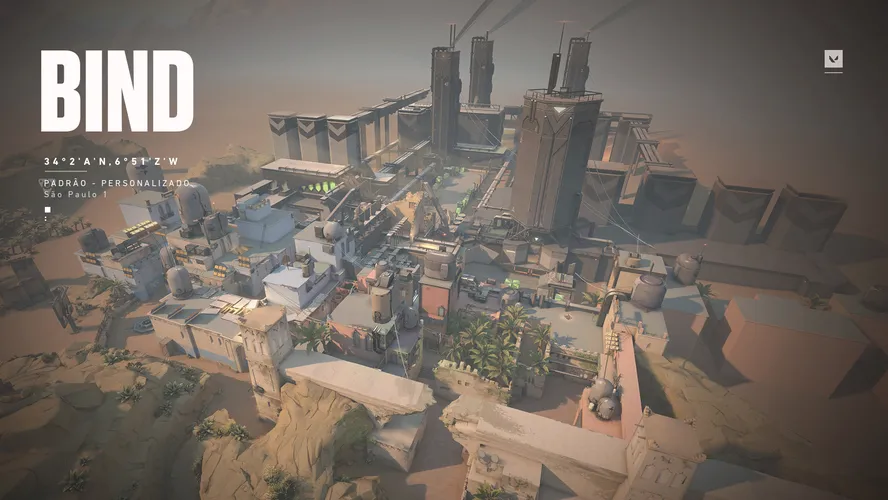

Cada mapa do VALORANT possui bomb sites (pontos de plantagem do Spike), rota de caminhos e elementos unicos de cenario que exigem estrategias diferentes. Abaixo estao alguns dos mapas mais conhecidos do jogo:
| Mapa | Ambientacao | Numero de sites | Caracteristica marcante |
|---|---|---|---|
| Bind | Marrocos | 2 | Possui teletransportadores entre areas do mapa |
| Haven | Inspirado no Butao | 3 | Unico mapa oficial com tres bomb sites |
| Split | Japao | 2 | Mapa vertical, com muitas passagens elevadas |
| Ascent | Italia | 2 | Portoes controlaveis pelo time defensor |
| Icebox | Regiao artica | 2 | Estrutura vertical em uma base de pesquisa congelada |
| Pearl | Cidade submersa | 2 | Cenario subaquatico com visual unico |
| Lotus | Inspirado na India | 3 | Portas rotativas que podem ser destruidas |
Observacao: o conjunto de mapas disponivel no modo competitivo muda periodicamente (rotacao de mapas), entao nem todos os mapas listados acima estao sempre ativos ao mesmo tempo.
Destaque: Bind

Bind foi um dos mapas presentes desde o lancamento do jogo e e conhecido por nao possuir area de rotacao pelo meio do mapa, sendo compensado por dois teletransportadores que ligam pontos distantes rapidamente.